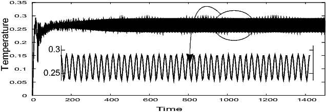
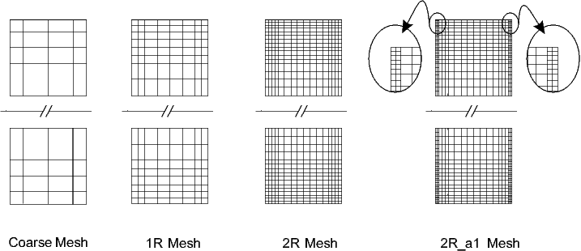

MIT Benchmark
Time step and mesh information
The time step is chosen so that there are enough data points in one oscillation of the resulting variables to graphically postprocess all quantities and so that smaller time steps do not significantly improve the solutions with respect to the quantitative measurements. After comparison with the results from Davis [3], Gresho [4], Turek [5] and Le Quéré [6] we choose approximately 34 time steps in one oscillation which corresponds to ΔT=0.1 as time step size. But before, we need to simulate the problem for a very long time (up to time t=1500) until we find a steady oscillation. To do this, we simulate by using a larger time step (ΔT=0.5) and a coarser mesh (2 times refinement from the above coarse mesh). The steady oscillation can be seen from the figure below. Then, starting from the last solution at time t=1500, computation for different meshes with a smaller time step (ΔT=0.1) is undergo for another 100 time unit.
Temperature oscillations at point 1

The plotting data of the above figure can be found here.
Several meshes have been used to perform the spatial discretization. The coarse mesh has approximately 1:5 x-to-y ratio of grid points and decreases gradually towards the walls. We apply local refinement on elements attached to both walls after several regular refinements. Note that regular refinement doubles the number of the total elements in both x and y-direction. The figure below describes how the local refinement is generated for some exemplary meshes. The meshes are denoted by ' R_a
R_a ' for local refinement steps after regular refinements.
' for local refinement steps after regular refinements.
Several hierarchies and types of meshes

Our very refined mesh, 4R_a3, has total number of elements which are comparable with Davis [3], approximately half from Gresho [4], and one-third from Turek [5] as can be seen from table below.
| Author Mesh |
Turek 128 x 704 |
Davis 83 x 403 |
Gresho 105 x 481 |
Le Quéré 48 x 180 |
| Mesh | Elements | Nodes | Edges | Dof |
|---|---|---|---|---|
| 2R | 1408 | 1513 | 2920 | 21747 |
| 2R_a1 | 1936 | 2043 | 3978 | 29679 |
| 2R_a5 | 17776 | 17891 | 35666 | 267327 |
| 3R | 5632 | 5841 | 11472 | 85731 |
| 3R_a1 | 6688 | 6899 | 13586 | 101583 |
| 3R_a4 | 21472 | 21689 | 43160 | 323379 |
| 4R | 22528 | 22945 | 45472 | 340419 |
| 4R_a1 | 24640 | 25059 | 49698 | 372111 |
| 4R_a3 | 37312 | 37735 | 75046 | 562215 |
» Continue to Results and Discussion.
» Return to the MIT benchmark page.